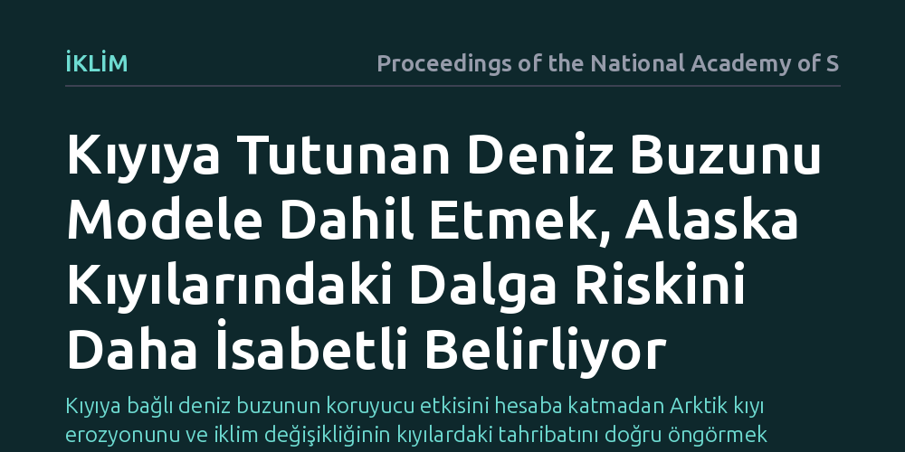

IKLIM · Proceedings of the National Academy of Sciences · 2026-10-26
Araştırmacılar, Alaska Arktik kıyılarındaki dalga ve erozyon riskini belirlerken kıyıya tutunan deniz buzunun etkisini yüksek çözünürlükle modelledi. Kıyı buzunu hesaba katan bu yeni yaklaşım, geçmiş modellerin yetersiz kaldığı kıyı dalga maruziyetinin çok daha isabetli hesaplanmasını sağladı.
Kıyıya bağlı deniz buzunun koruyucu etkisini hesaba katmadan Arktik kıyı erozyonunu ve iklim değişikliğinin kıyılardaki tahribatını doğru öngörmek mümkün değildir.

Kuzey Kutbu bölgesinde iklim değişikliğinin etkileri genellikle buzulların erimesi veya sıcaklık artışıyla gündeme gelse de, kıyılarda yaşayan topluluklar ve altyapı için en acil tehditlerden birini kıyı erozyonu oluşturmaktadır. Okyanus dalgaları, kıyı şeridini aşındırarak karayı yavaş yavaş denize katmakta ve fırtına dönemlerinde yerleşim alanlarını taşkın riskiyle karşı karşıya bırakmaktadır. Bu tehdidin boyutunu ve kıyıların ne kadar savunmasız olduğunu doğru belirleyebilmek, kıyıya vuran dalgaların gücünü ve sıklığını doğru ölçebilmeye bağlıdır.
Ne var ki geleneksel iklim ve okyanus modelleri, açık deniz koşullarını geniş ölçekte analiz ederken kıyıya yakın dar bölgelerdeki karmaşık dinamikleri yakalamakta yetersiz kalmaktadır. Özellikle kıyı şeridine bitişik olarak oluşan ve açık denizdeki serbest buz kütlelerinden farklı davranan kıyı buzları, dalgaların kıyıya ulaşmasını engelleyen doğal bir dalgakıran işlevi görür. Bu koruyucu kalkanın hesaba katılmaması, kıyı erozyonu tehlikesinin ya gereğinden az ya da abartılı tahmin edilmesine yol açabilmektedir.
Mevcut tarihsel dalga veri setlerinin en büyük eksikliği, kıyıya yakın bölgeleri yeterli mekânsal çözünürlükte ele alamamalarıdır. Araştırmacılar bu sorunu aşmak için Alaska'nın Çukçi ve Beaufort denizleri boyunca uzanan kıyı şeridinde, kıyıya tutunan deniz buzu örtüsünü doğrudan hesaba katan yüksek çözünürlüklü bir oşinografik modelleme yaklaşımı uyguladılar. Çalışmada, atmosferik rüzgar hareketleri, fırtına izleri ve deniz tabanı derinliğiyle etkileşim halindeki üçüncü nesil dalga modellerinden yararlanıldı.
Model, sadece açık denizdeki dalga hareketini değil, kış ve ilkbahar aylarında kıyıya yapışık duran hareketsiz buz tabakasının dalga enerjisini nasıl soğurduğunu ve kıyı şeridine erişimini nasıl kestiğini simüle etti. Böylece onlarca yıllık gözlem ve yeniden analiz verileri harmanlanarak, kıyıların yıl boyunca gerçekte ne kadar dalga enerjisine maruz kaldığı adım adım hesaplandı.
Elde edilen sonuçlar, kıyıya tutunan deniz buzunun dikkate alınmadığı geleneksel modellerin kıyı dalga maruziyetini yanıltıcı biçimde yansıttığını gösterdi. Kıyı buzu sahada mevcut olduğunda, fırtına kaynaklı büyük dalgaların kıyı çizgisine çarpmasını neredeyse tamamen önlemekte ve erozyon riskini yerel düzeyde önemli ölçüde azaltmaktadır. Buna karşılık, buz örtüsünün bulunmadığı veya geç oluşup erken çözüldüğü açık su mevsimlerinde dalga enerjisinin kıyıya doğrudan aktarıldığı görüldü.
Bu durum, Arktik kıyılarındaki asıl tehlikenin sadece açık denizdeki dalga boyunun büyümesi olmadığını, kıyı buzunun yıl içinde kıyıda kaldığı sürenin kısalmasıyla da yakından ilişkili olduğunu ortaya koydu. Kıyı buzunun varlığı ve yokluğu arasındaki bu keskin fark, erozyon baskısının yılın hangi haftalarında yoğunlaştığını çok daha net biçimde belirlemeyi mümkün kıldı.
Bu çalışmanın ortaya koyduğu bulgular, Arktik bölgesindeki kıyı köyleri, sanayi altyapısı ve ekosistem yönetimi için doğrudan pratik sonuçlar doğurmaktadır. Kıyı erozyonuna karşı inşa edilecek savunma yapıları veya tehlike altındaki yerleşimlerin taşınması gibi maliyetli kararlar, kaba küresel modellere değil, yerel buz dinamiklerini yansıtan bu tür hassas simülasyonlara dayanmak zorundadır.
Küresel sıcaklıklar arttıkça kıyıya tutunan buzların oluşumunun gecikmesi ve baharda daha erken parçalanması beklenmektedir. Bu yeni modelleme altyapısı, hangi kıyı kesimlerinin savunmasız kalacağını ve gelecekteki taşkın risklerinin hangi dönemlerde yoğunlaşacağını daha gerçekçi biçimde öngörmeye olanak tanıyacaktır.